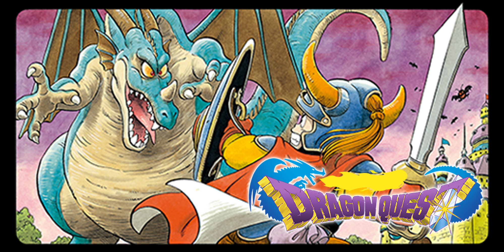

Dragon Quest (originally localised as Dragon Warrior) is the first title in the Dragon Quest series. It was developed by Chunsoft and published by Enix. Dragon Warrior originally released in 1986 in Japan for the MSX and the Famicom. The game was localised for North American release in 1987, but the title was changed to Dragon Warrior to avoid infringing on the trademark of the pen and paper game DragonQuest. The North American version of the game was greatly improved graphically over the Japanese original, and added a battery-backed save feature, whereas the Japanese version used a password system. Nintendo was impressed with the Japanese sales of the title and massively overproduced the cartridge; the end result was that Nintendo gave away copies of Dragon Warrior as an incentive for subscribing to Nintendo Power, the companies in-house promotional magazine. Quest was one of the first Japanese turn-based role-playing games to have widespread success and is considered a pioneer in the development of the genre. Along with Final Fantasy, Dragon Quest would spawn a successful franchise that would become the de facto standard for role-playing video games.
